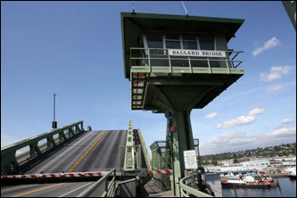
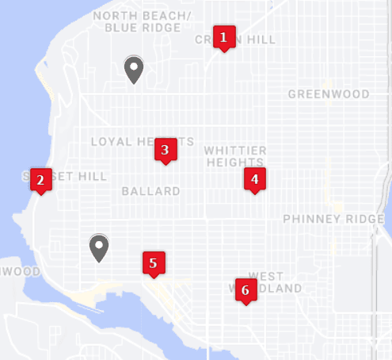
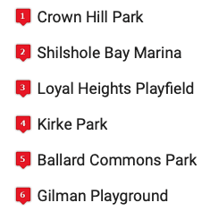
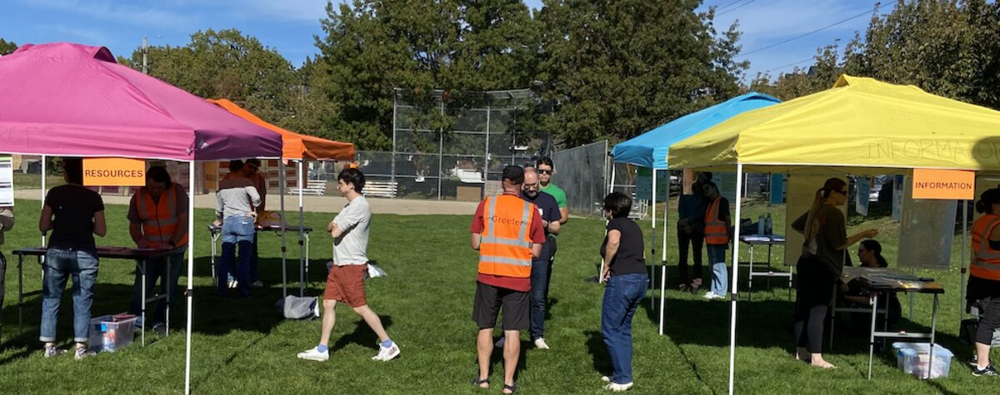
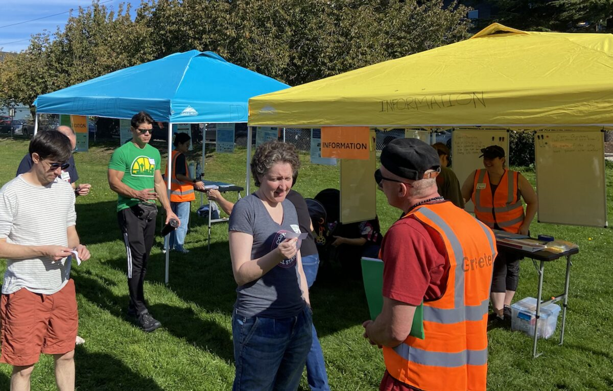

Ballard Hubs

Who We Are
We are an all-volunteer organization and have been around for more than a decade. The Hub system capitalizes on what people naturally do after a disaster – organize to help one another. We advocate for building community and practicing a logical system that helps neighbors "hit the ground running" if a disaster rocks their community!
Ballard has volunteers committed! to helping their neighbors deal with the immediate aftermath of a large-scale disaster.
In the event of a disaster, six Emergency Hubs in the Ballard area will "activate" to help neighbors.
What a Hub Is – and Is Not
We do not stockpile food or water. We run a low-tech system that helps neighbors find out what's going on (think ham radio). We also help locate and share resources already within the community. We support neighbors until outside help can arrive – just like what we've seen in the southeastern states after hurricanes.
Ballard-Area Hubs
Six Emergency Hubs cover the Ballard area. See them all on the Neighborlink Map, or find the one closest to you with the Hub Finder.
- Crown Hill Park Hub – 9809 Holman Rd NW. Hub captain: Stuart Nakamura. Crown Hill also runs its own site.
- Shilshole Bay Marina Hub – 7001 Seaview Ave NW. Hub captain: Johnny Smith.
- Loyal Heights Playfield Hub – 2101 NW 77th St, at the Loyal Heights Community Center basketball half court. Hub captain: Cheryl Dyer.
- Kirke Park Hub – In Kirke Park, 7028 9th Ave NW. Hub captain: Hugh Kelso.
- Ballard Commons Park Hub – 5701 22nd Ave NW. Hub captains: Jody Grage, Juliana Plemitscher, Riley McNabb.
- Gilman Playground Hub – 923 NW 54th St; meet near the NE ball field. Hub captains: Dan Caffarel, Darren Linker.


The Ballard P-Patch at 8527 25th Ave NW is also designated as a hub location, but does not yet have an active volunteer group. Get in touch if you'd like to help organize it.
Latest News
Heartfelt thanks to the Department of Neighborhoods for helping us update the Ballard Hubs' gear!
Neighbors are much better prepared to respond to a disaster.
The Ballard Hubs got their original boxes and gear many years ago. Since then, we have refined the system we use to support our communities, and an update was due. We were awarded a Neighborhood Matching Fund grant in return for significant effort by hub volunteers and the community. The biggest expense was a larger box – one that could accommodate the canopies, tables, and other gear we will need to get us organized.

Once the gear was in place, all four staffed Ballard Hubs hosted a "shake down cruise" to test out their new gear, train their volunteers to run the hub, and educate the community on what a hub is – and what a hub is not.

Our sincerest thanks to our hub volunteers, neighbors, and friends who came out to "drill" with us. We trust you had fun and learned a great deal about how Ballard will support one another after a disaster.
Get Involved
Questions? Want to get involved? Reach out at BallardPrepares@gmail.com. We don't usually practice during the colder (wetter) months, but the indoor trainings continue!